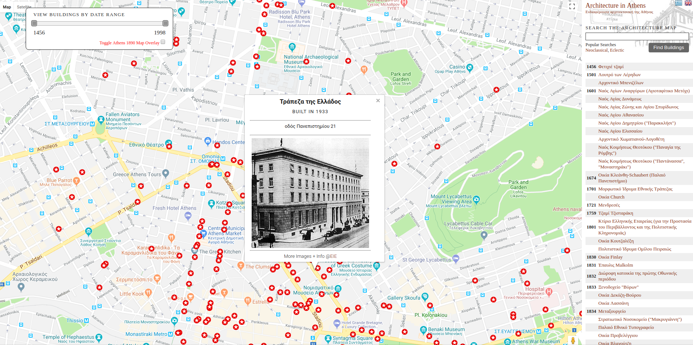
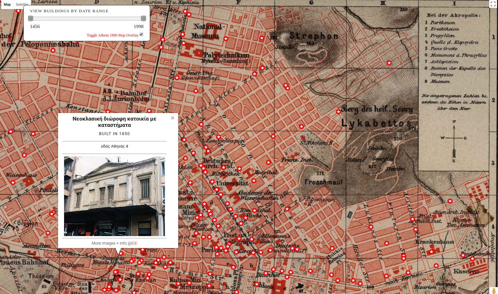
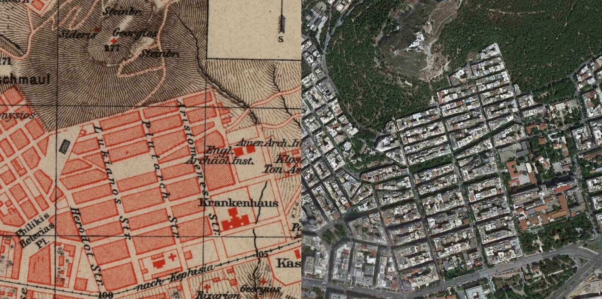
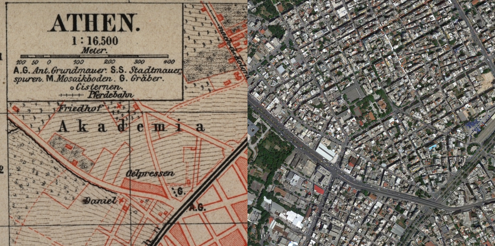
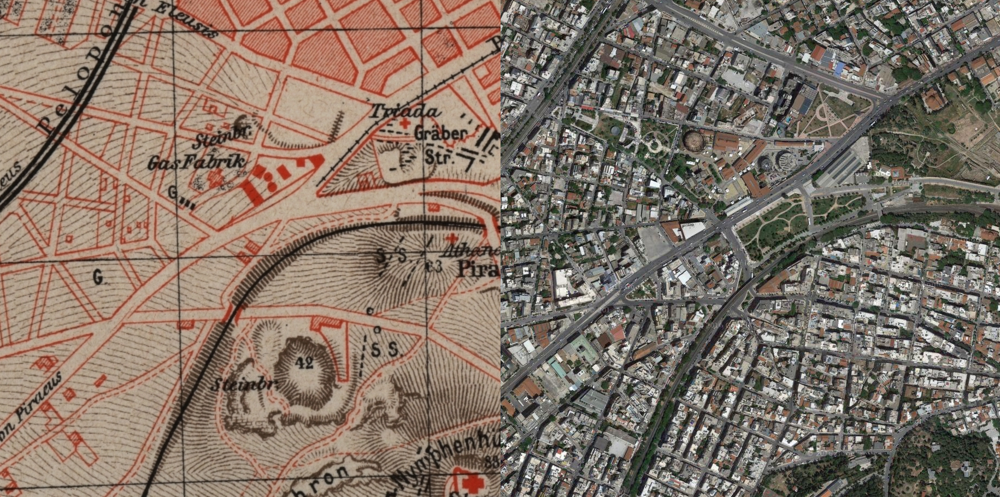
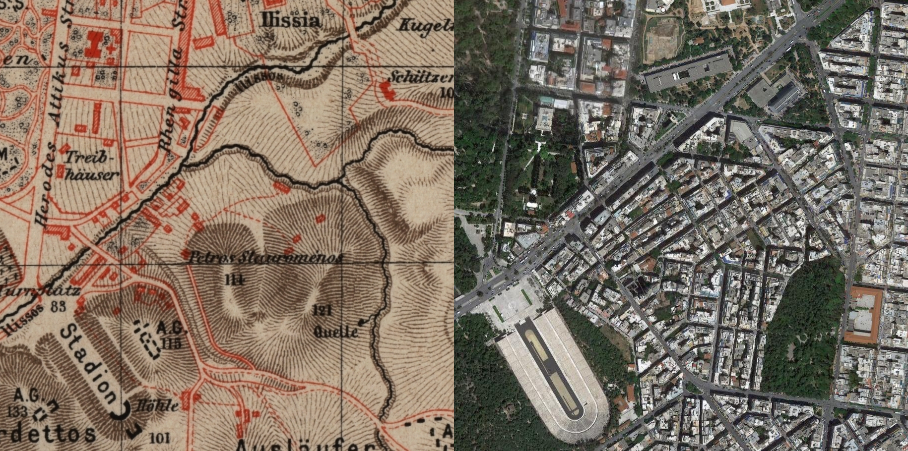
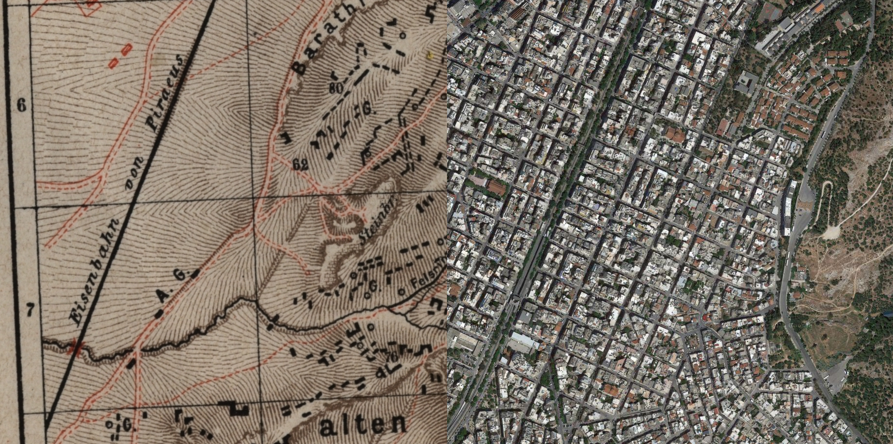
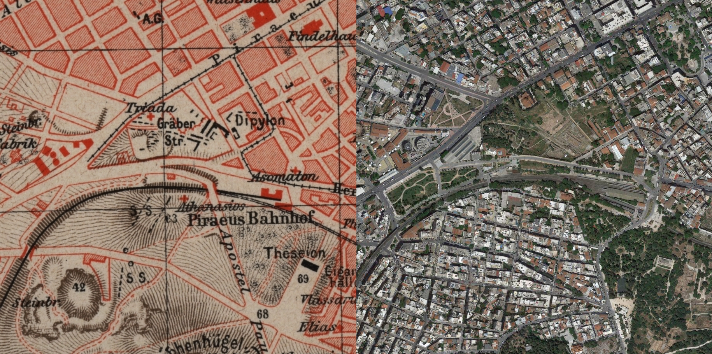
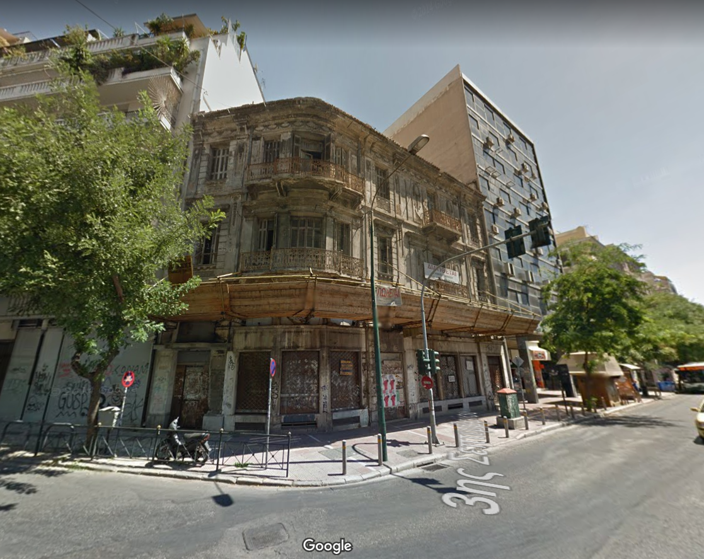

Athens historical architecture map
Fri Jan 15 --:--:-- -- 2010
Using google maps API and by geocoding data from EIE I've constructed a map of interesting architecture in Athens. Buildings can be filtered according to year of construction by using a slidebar (see screenshot above) + the map has a basic search function. The project was implemented in Javascript, PHP + MySql with data-preprocessing in bash.
Using a map of Athens published in 1890 from Meyers Konversationslexikon, following the design of modern Athens by architects Stamatis Kleanthis, Eduard Schaubert & Leo von Klenze , I aligned the streets from the 1890 survey with the streets as they exist today. To perform the alignment, I used MapCruncher from Microsoft Research.
The 1890 survey is astonishingly accurate - It's fascinating how this level of precision cartography was achieved without modern day tools such as GPS. Subsequently, the original survey can be imposed on to the modern map with very minor corrections.
Central Athens

Kolonaki
Above is a detail of Kolonaki. According to the 1890 map, the modern day Hilton hotel was built on top of a Barracks & everything south of Vasilissis Sofias Avenue was undeveloped.. You can also see how the development of Kolonaki has spread up into Lykavittos.
Filopappou Hill / Hill of the Muses

Acadamia
Gazi
Ilisia
Kato Petralona
Thiseio
46 Septemviou
Back to the architecture map - I've noticed this building a few times whilst coming back from Athens in a taxi. According to EIE, it was built in 1925. I especially like this one - it stands in huge contrast to the hastily built modern slabs of concrete around it. Here it is on the map - 46 Septemviou & Marni Steet